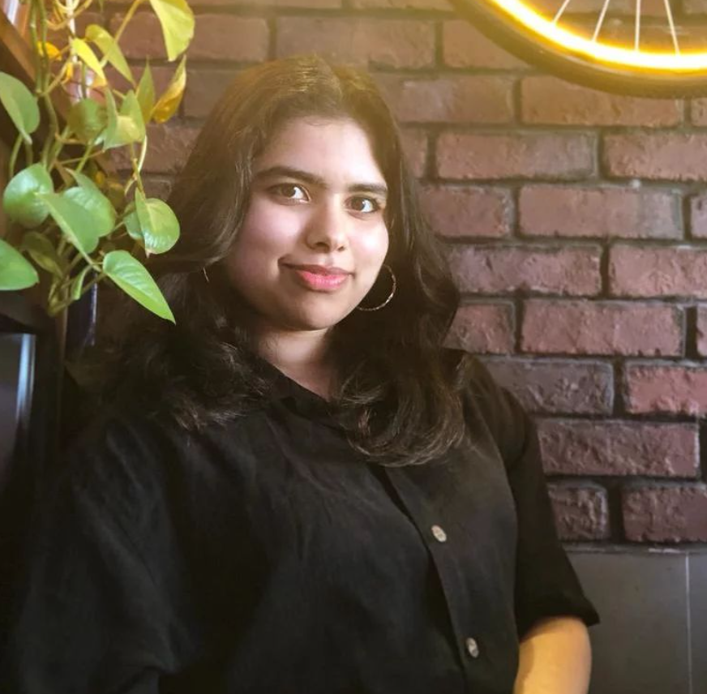

Beverly Gracious
Summary
I am a qualified and motivated individual with experience in education,
marketing and administration in the UAE. I'm extremely motivated and striving towards enhancing my skillset.
Education
- BBA, Hospital and Healthcare Management - Sankara Nethralaya Academy in Collaboration with Hindustan University (2018-2021)
Work Experience
-
Insurance Assistant - Millennium Insurance Brokers
2022-2023
- Liaising with clients and insurers to process insurance for
members within TAT.
- Invoice booking, reconciliation and creating monthly reports.
- Processing individual basic insurance for clients
-
Patient Relation Executive - Emirates Heatlhcare Company
2021
- Assisting patients through appointment scheduling, registration,
and billing.
- Efficiently checked for patients' insurance eligibility and guided
them through.
- Dealt with insurance approvals through e-claim and insurance
portals and also dealt with denials.
Internships
- Digital Markerting Internship - Girls in Marketing (2022)
- Project Intern - MGM Healthcare (2021)
- Intern - Sankara Nethralaya Eye Hospital (2019)
Skills
- Customer Service: ⭐⭐⭐⭐⭐
- Microsoft Office: ⭐⭐⭐⭐⭐
- Team Work: ⭐⭐⭐⭐
Certifications
- TEACHER OF ENGLISH TO SPEAKERS OF OTHER LANGUAGES (TEFL) - 2022
- DIPLÔME D'ÉTUDES EN LANGUE FRANÇAISE - B1 - 2021
- CPC-A - 2018
Others